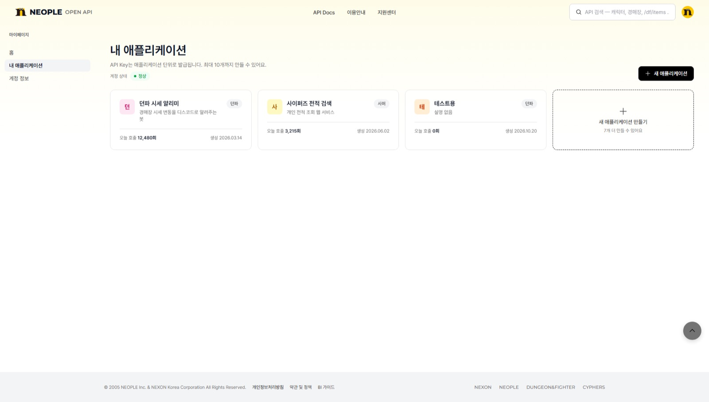

Neople Developers
01 - OVERVIEW
디자인 시스템으로 시작해
디자인 시스템으로 시작해
AI와 함께 코드까지 완성한 UI
Neople Developers의 사용자 · 관리자 화면 설계 및 구현. 메인 화면을 Figma로 먼저 작업해 톤과 무드를 잡고, 이를 기준으로 라이브 서비스의 개선 사항을 프롬프트로 정리했습니다. 기존 디자인 시스템과 함께 Claude Code에 적용해 화면을 생성하고, 코드 환경에서 레이아웃 · 컴포넌트 · 디테일을 직접 개선하였습니다.
시안을 만들고, 프롬프트를 쓰고,
결과를 확인했습니다.

기존에 만든 디자인 시스템을 토대로 메인 화면 시안을 만들고, 구현은 프롬프트로 요청했습니다.
화면 구현과 Figma 미러링은 Claude Code가 진행했고, 저는 결과를 확인하며 수정을 요청했습니다.
시안 한 장과 디자인 시스템으로 전체 화면을 구현
메인 화면 시안과 디자인 시스템을 기준으로 제공해, AI가 만든 화면에서도 같은 톤이 유지되었습니다.
흩어진 아코디언 목록을
탐색 · 문서 · 테스트 한 화면으로
AS-IS

- —36개 API가 한 페이지에 나열되어 스크롤로만 탐색
- —문서와 테스트가 분리되어 별도 도구 필요
TO-BE

디자인 시스템 기반으로 Claude Code가 생성하고 코드에서 다듬은 화면 · 데이터는 블러 처리
01API 트리 · 검색
좌측 트리와 검색으로 원하는 API에 바로 이동
02엔드포인트 중심 문서
메서드 · URL을 상단에, 변수와 응답은 표로 정리
03옆에서 바로 테스트
문서를 보며 값 입력 후 즉시 요청 · 응답 확인
키만 보이던 표를
앱 상태가 보이는 카드로
AS-IS

- —앱이 표 한 줄로만 표시되고 관리는 설정 버튼 하나
- —API Key가 목록에 그대로 노출
TO-BE

디자인 시스템 기반으로 Claude Code가 생성하고 코드에서 다듬은 화면 · 데이터는 블러 처리
01카드형 앱 목록
게임 · 호출 수 · 생성일을 카드 하나로 비교
02남은 생성 수 안내
빈 카드로 남은 개수 표시, 바로 생성으로 연결
03키는 상세에서
목록에서는 숨기고 상세에서 보기 · 복사 · 재발급